Sumika Shell is a modular desktop shell for Hyprland, built with Quickshell. A lean core of 17 modules plus drop-in extensions — voice input, screenshots, backups, a Windows VM, 22 themes — discovered at startup, never compiled in.
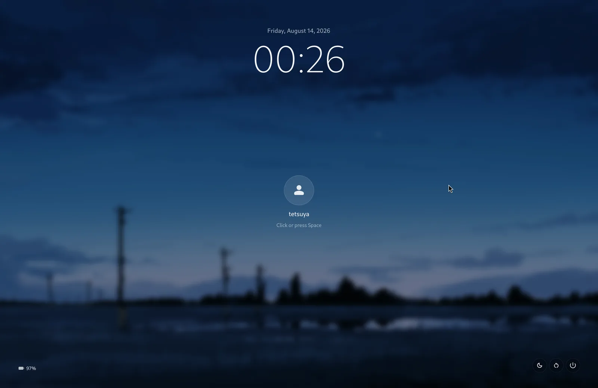
Core owns the minimum usable desktop; everything else is an isolated extension with its own QML, helpers and dependencies. Install only what you use.
Extensions live in ~/.local/share/sumika-shell/extensions/ and are discovered at
startup. Core always wins on ID conflicts — an extension can never shadow or break the shell.
Every bar widget loads through the module registry — no feature branches in shell code. Extensions contribute bar buttons, popups, settings pages and launchers declaratively.
22 curated themes cover shell, terminal, editor and lock screen, generated from one
colors.toml per theme. Apply instantly, preview before you commit.
Deep configuration lives in keyboard-driven TUIs (backup, keyboard remap, themes, VM) launched into floating terminal windows with stable app-ids.
sumika-doctor diagnoses the session; sumika-restart guards against
killing a locked bar. Lock screen lives in the shell process — no third-party locker.
Core installs a minimal package set. Each extension declares and manages its own dependencies — installing one never expands the core footprint.
Strict dependency direction: extensions may import core, never the reverse.
sumika-session boots Hyprland, exports the path API and starts systemd units.
Hyprland with Lua config: bindings, monitors, window rules. labwc fallback config included.
Quickshell QML: bar, popups, overview, launcher, notifications, lock screen.
QML singletons for audio, network, power, workspaces, brightness, MPRIS, tray, Bluetooth.
Every theme covers the shell, terminal, editor and lock screen. Previews below are generated from the actual theme files — what you see is what ships.
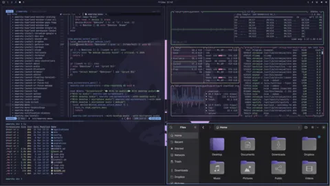
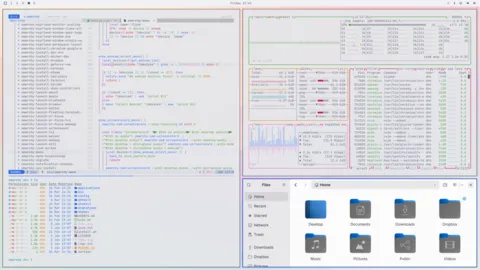
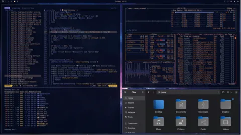
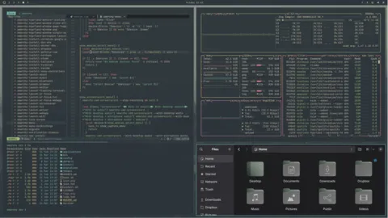
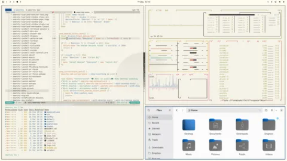
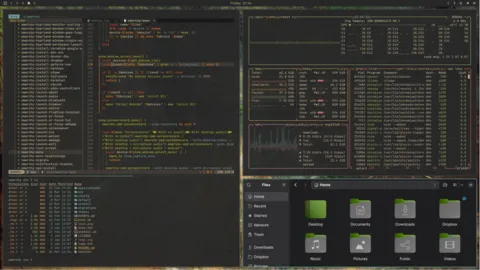
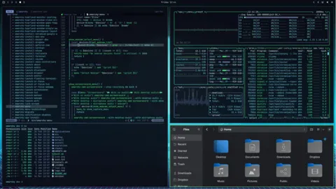
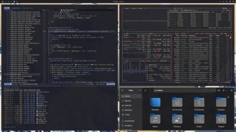
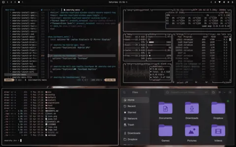
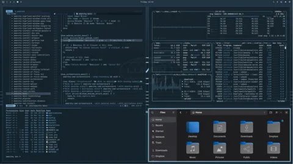
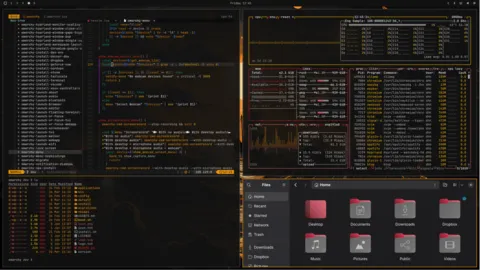
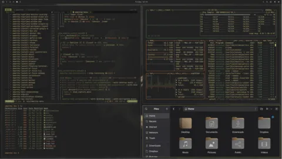
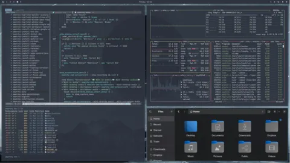
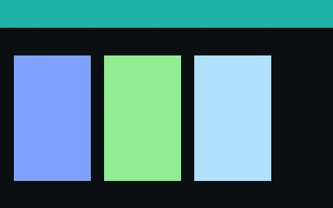
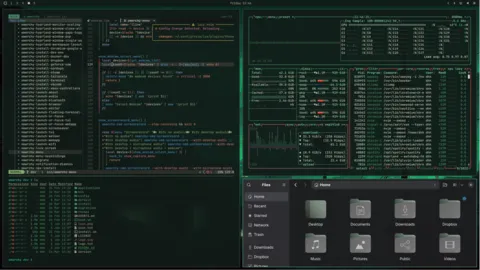
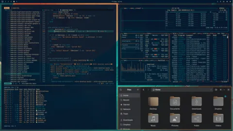
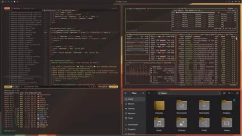
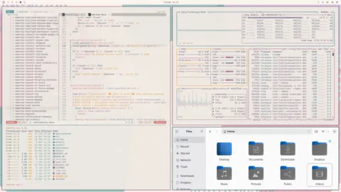
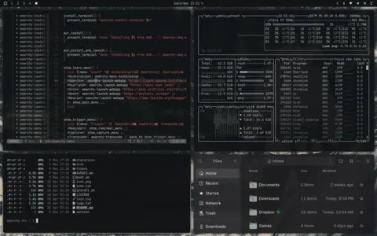
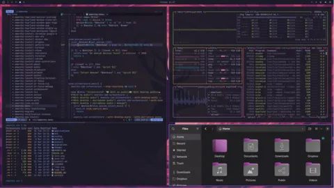
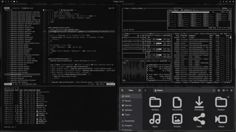
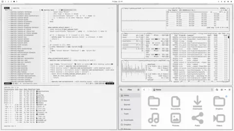
Clone the repository and run the installer; it sets up the Quickshell symlink and the Sumika session. Extensions install separately from the store.
git clone git@github.com:iamcheyan/oh-my-desktop.git ~/development/OMD
cd ~/development/OMD && ./Init.sh
# after installing any extension:
sumika-restart # reload the shell (lock-safe)
sumika-doctor # diagnose the session